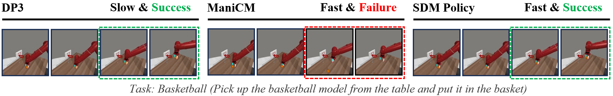

*Equal Contributions, ✞Project Leader ,†Corresponding author
Diffusion Policy has been proven effective for imitation learning, enabling robots to learn complex tasks by modeling action distributions. However, the long inference time limits its suitability for high-frequency control tasks, which is essential for practical applications of robots in real-world settings. To address these limitations, we propose the Score and Distribution Matching Policy (SDM Policy), an innovative imitation learning algorithm that builds upon pre-trained Diffusion Policy and utilizes two teacher models to optimize a one-step generator. By integrating gradient optimization and diffusion optimization, and employing KL divergence to align generated actions with the target distribution, SDM Policy overcomes stepwise error accumulation and achieves global consistency. Our approach, validated across 57 robotic tasks in simulated environments, results in a 6 times increase in inference speed and improved action quality, striking a balance between speed and precision. This method provides a scalable and practical solution for robot manipulation.
Our method distills the Diffusion Policy, which requires long inference times and high computational costs, into a fast and stable one-step generator. Our SDM Policy is represented by the one-step generator, which requires continual correction and optimization via the Corrector during training, but relies solely on the generator during evaluation. The corrector's optimization is based on two components: gradient optimization and diffusion optimization. The gradient optimization part primarily involves optimizing the entire distribution by minimizing the KL divergence between two distributions, \( P_{\theta} \) and \( D_{\theta} \), with distribution details represented through a score function that guides the gradient update direction, providing a clear signal. The diffusion optimization component enables \( D_{\theta} \) to quickly track changes in the one-step generator’s output, maintaining consistency. Details on loading observational data for both evaluation and training processes are provided above the diagram. Our method applies to both 2D and 3D scenarios.
We evaluated 57 challenging tasks using 3 random seeds and reported the average success rate (%) and standard deviation for three domains. \( ∗ \) indicates our reproduction of that task, and indicates that the data for this method has not been disclosed. Our SDM Policy outperforms the current state-of-the-art model in one-step inference, achieving better results than Consistency Distillation and coming closer to the performance of the teacher model, which demonstrates its effectiveness.
We sampled 10 simulation tasks and presented the learning curves of our SDM Policy alongside DP3 and ManiCM. SDM Policy demonstrated a rapid convergence rate. In contrast, ManiCM showed slower learning progress, and DP3’s convergence speed was also slower than our method.
We evaluated 57 challenging tasks using 3 random seeds and reported the average speed (Hz) for three domains. \( ∗ \) indicates our reproduction of that task. Our SDM Policy outperforms the current state-of-the-art model in one-step inference, achieving better results than Consistency Distillation, providing strong evidence of the effectiveness of our model.
Visualized keyframes for some tasks. We found that during training, our SDM Policy could better complete the task and learn more precise actions, while consistency distillation might lead to task failure.

We would like to thank the members of the Machine Intelligence Lab at Westlake University for fruitful discussions, helps on experiments, and support. Our code is generally built upon: 3D Diffusion Policy, ManiCM, DMD, Diffusion Policy, DexArt, VRL3, MetaWorld. We thank all these authors for their nicely open sourced code and their great contributions to the community.
@article{jia2024sdm,
title={Score and Distribution Matching Policy: Advanced accelerated Visuomotor Policies via matched distillation},
author={Bofang Jia and Can Cui and Pengxiang Ding and Mingyang Sun and Pengfang Qian and Siteng Huang and Zhaoxin Fan and Donglin Wang},
journal={arXiv preprint arXiv:},
year={2024}
}